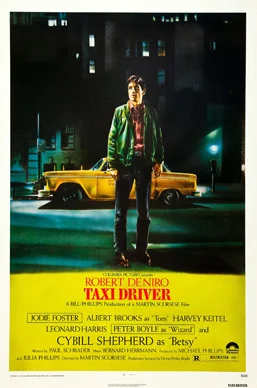
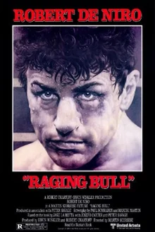

Explore film ↗
Explore film ↗Goodfellas
Martin Scorsese
DIRECTOR PROFILE
Martin Charles Scorsese ( skor-SESS-ee; Italian: ; born November 17, 1942) is an American filmmaker.

LIFE & CAREER
Martin Charles Scorsese ( skor-SESS-ee; Italian: ; born November 17, 1942) is an American filmmaker. One of the major figures of the New Hollywood era, he is widely considered one of the greatest and most influential directors in the history of cinema. He has received numerous accolades including an Academy Award, four British Academy Film Awards, three Emmy Awards, a Grammy Award, and three Golden Globes.
Adapted excerpt from Wikipedia, CC BY-SA 4.0. Pronunciation notes omitted.
Read the full biographyImage: Harald Krichel. Source & rights: CC BY-SA 4.0 ↗.
Profile reference: Director background ↗
Open this director checklist ↗
A selection of this director’s films available in the archive.
Explore film ↗Martin Scorsese

Explore film ↗Martin Scorsese

1980 · Martin Scorsese